Every class, every deadline, one calm place.
pulls in your Canvas assignments, grades and teacher announcements, then helps you plan, write and study with an AI coach. It runs on your own computer.
Animation with demo data Built from the app's own screens and cards. Pick a scene below the window, or hover to pause.
Bring your classes into ChatGPT, Claude and Codex
includes a local connector (MCP), so the ChatGPT, Claude Desktop, Claude Code or Codex you already use can work with your school info, right on your computer.
- Search your downloaded Canvas files and see the exact page
- Read a syllabus with page citations
- List what is due, and check grades and announcements
- Save the original file to a folder you approve
- Download the appInstall and sign in to Canvas the usual way.
- Open the connectionsGo to Settings › Connections › Assistants outside .
- Set it upChoose Set up for Claude, Codex or ChatGPT and follow the short steps. After an app update, reconnect once.
And in your chat app
ECO 4335, Health Economics
- Paper 1 response is due Oct 30, 11:59 PM (100 pts).
From your saved Canvas snapshot, last synced Oct 20.
It is in Paper 1.pdf, on page 2 of 3p. 2
“Section 2 reviews Carpenter and Dobkin (2011), who use a regression discontinuity at age 21…”
You choose what each assistant can see. Only Canvas is shared by default; change it any time in Settings › Connections.
Built around how a semester really goes
Northstar reads your classes and keeps the whole picture in one window, so you spend less time hunting and more time doing.
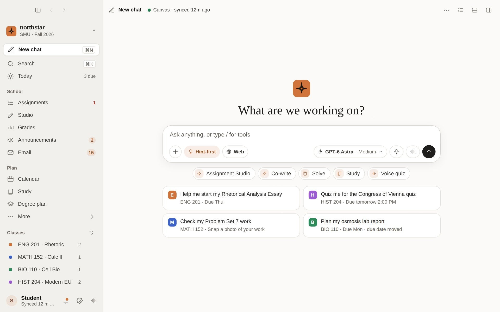
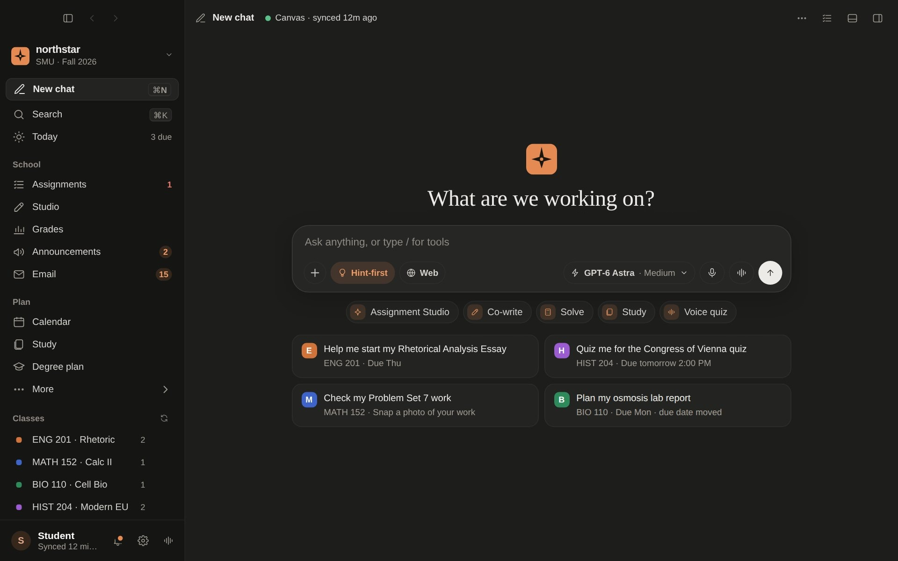
Know what to do next
Open the app and see what is due, what is late and what to start first, across every class.
- One list of today's work, sorted by what matters
- Calendar-aware: plans work blocks around your events
- Quiet reminders for due dates and missing work
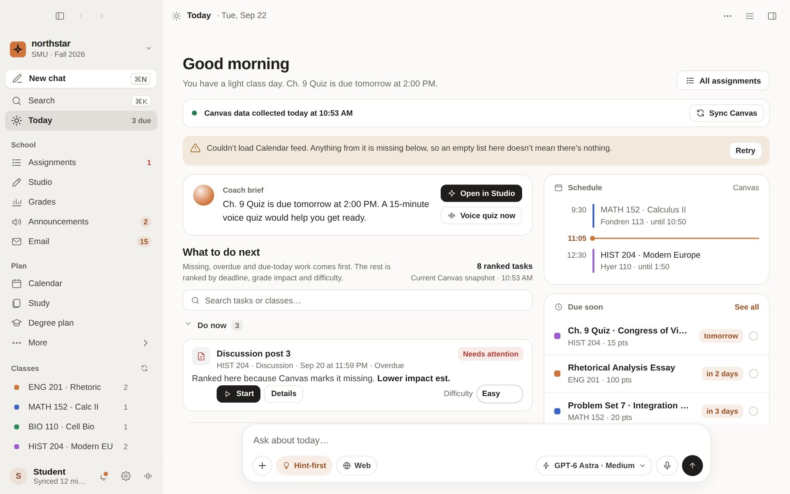
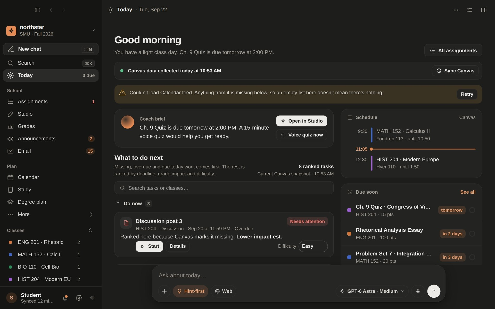
Every Canvas assignment, finally in one list
Upcoming, missing and done, color-coded by class, with due dates written the way you think about them: tomorrow, in 3 days.
- Filter by class or status in one click
- Points, type and due-date changes at a glance
- Start a Studio or ask the coach straight from a row
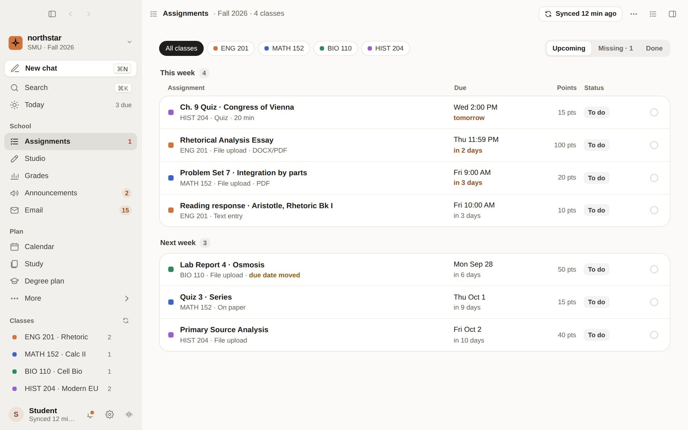
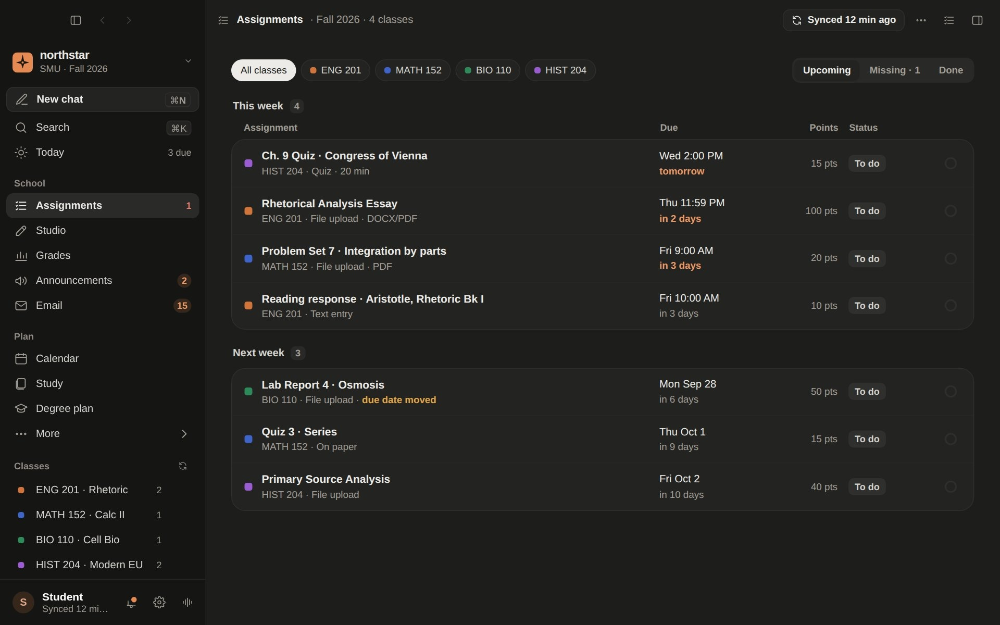
See where you stand, and what it takes
Your estimated GPA and a card for each class, with a trend line and the weight of every category.
- "Keep an A−: you need 82% or better on the next essay"
- What-if calculator to try a score before it happens
- Flags the class that needs attention first
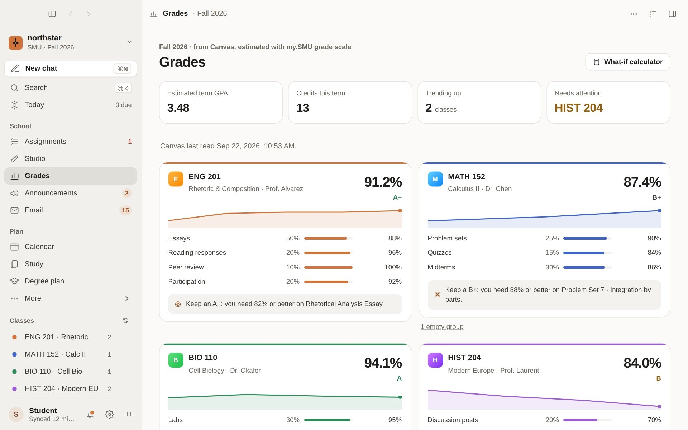
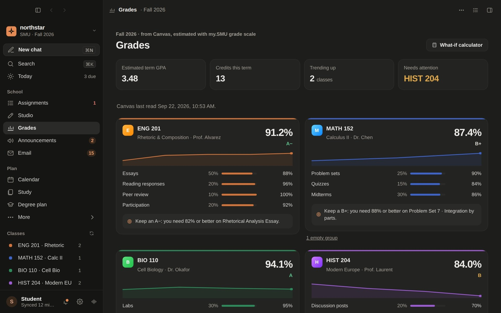
Teacher posts you will actually read
Every announcement from every class in one inbox, with a plain-language note on what it means for you.
- Unread first, filter by class
- "What this means for you" summary on each post
- Ask the coach about it, or open it in Canvas
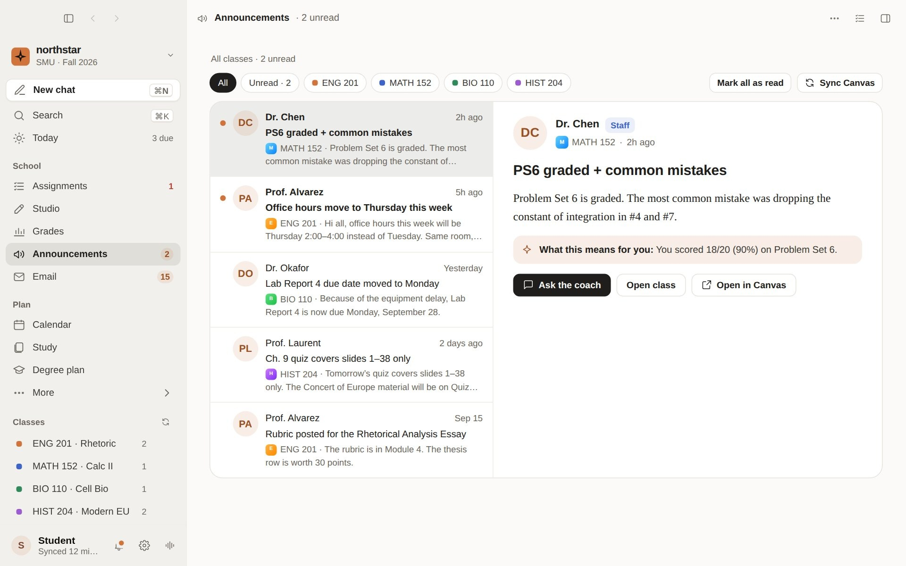
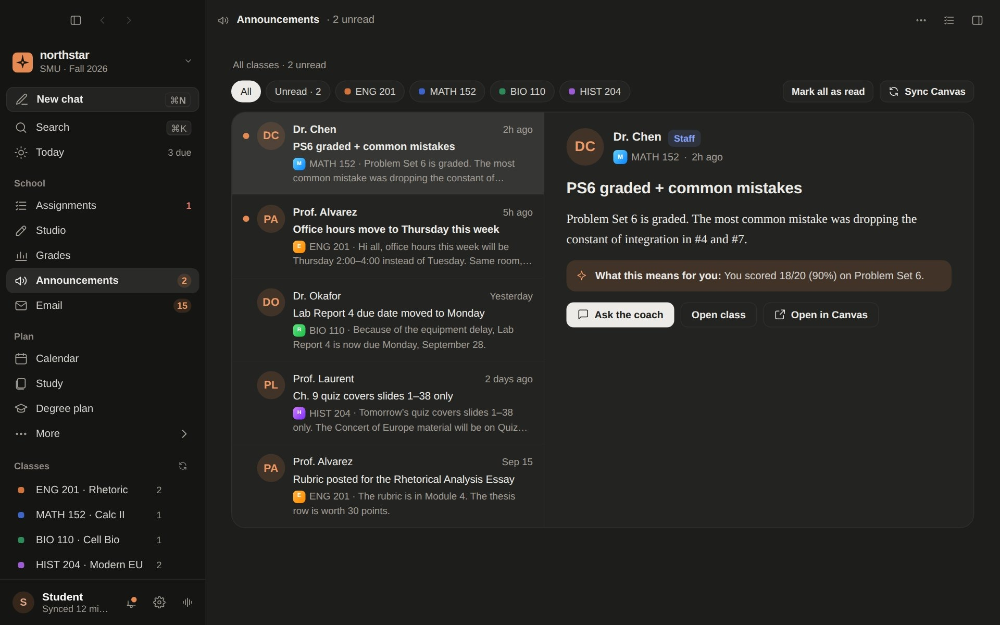
Writing help that keeps your voice
Studio ties a workspace to an assignment, its rubric and your calendar. It helps you outline, draft, revise and check your work, one step at a time.
- Reads the rubric, so hints match the grading
- Won't write graded work for you; every AI word is marked
- Saved on your computer, with version history
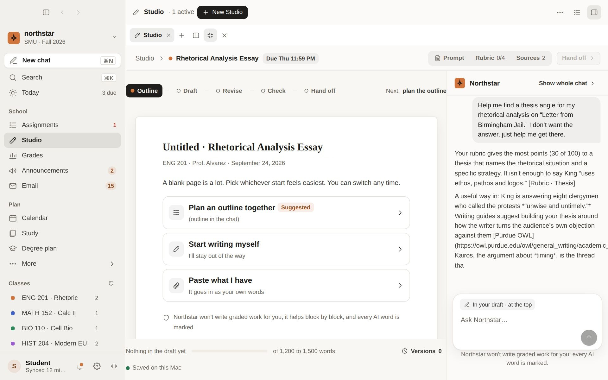
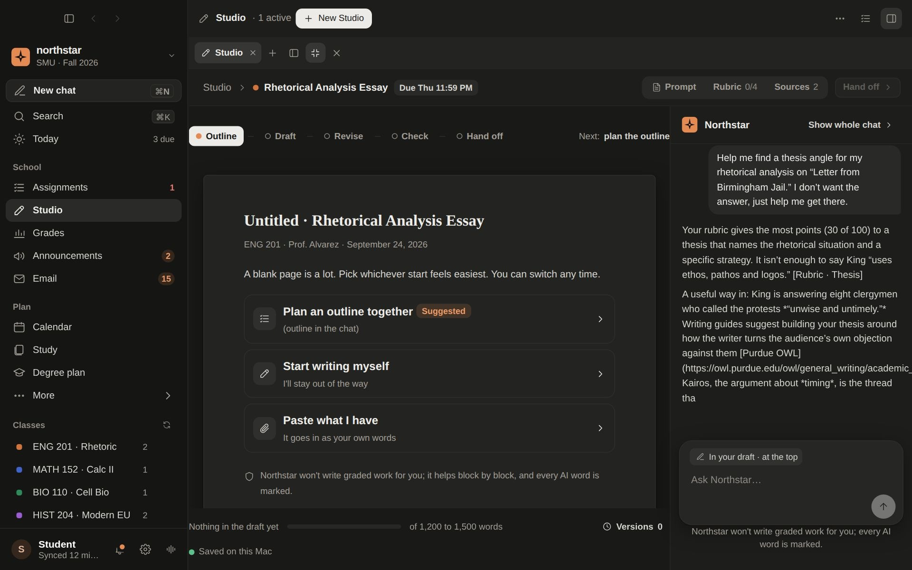
Works with the AI you already use
Bring your own Claude or ChatGPT. You decide how.
A coach in every screen
Ask about an assignment, a grade or an announcement. The coach already knows your classes.
Connect Claude or ChatGPT
Use your own subscription. In Settings, Connections, choose which assistants may see your school info.
Calendar and email
See school email and your calendar next to your classes, and plan study blocks around real events.
Make it yours
Six color schemes, each in light and dark. Pick one in Settings; try them here.
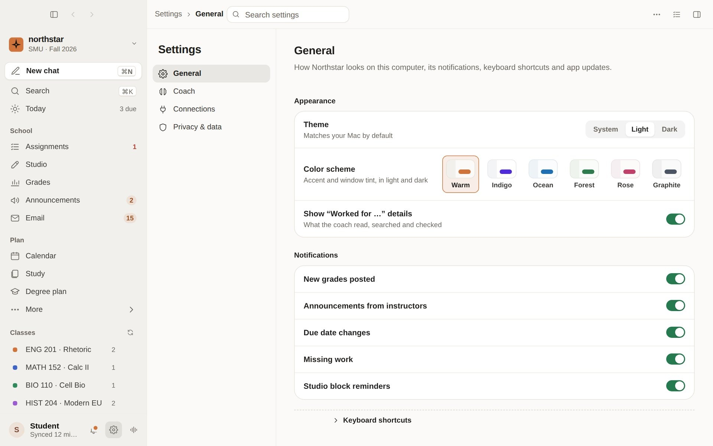
Screenshot: Settings > General > Appearance. Choosing a scheme here also tints this page.
Your school life stays on your computer
Northstar runs on your Mac or PC. Your assignments, grades and drafts are stored there, and you decide what Claude or ChatGPT can see.
Runs locally
Your classes, grades and drafts are saved on this computer, not in someone else's cloud.
You choose what is shared
Each category (Canvas, files, chats, email, calendar and more) is its own switch, off unless you turn it on. Turn it off and it stops at once.
Passwords never shared
School passwords, sign-in cookies and API keys are never given to an AI assistant.
Requirements
Mac
- Apple Silicon (M1 or newer)
- macOS 12 Monterey or newer
- About 2 GB free space
Windows
- Windows 10 or 11, 64-bit
- About 2 GB free space
- An internet connection to sync Canvas
Questions
The Mac says it can't verify the app. Is it safe?
Honest answer: the Mac app is not notarized by Apple yet, so macOS shows a warning the first time. Northstar is the same file everyone gets from this page. To open it once:
- Open the downloaded .dmg and drag to Applications.
- In Applications, right-click (or Control-click) the app and choose Open, then Open again.
- Or: try to open it, then go to System Settings > Privacy & Security, scroll down and click Open Anyway.
You only need to do this the first time.
How do updates work?
Updates install from inside the app. When a new version is ready, tells you and updates itself. You never need to come back to this page, though the button above always gets the newest version.
Does it need my school password?
You sign in to Canvas the way you normally do, in the app. Northstar never gives your passwords or sign-in cookies to an AI assistant.
What can Claude, ChatGPT or Codex see through ?
Only what you switch on. Canvas is the only thing shared by default; Library files, chats, email, calendar and more are each their own switch under Settings › Connections › Assistants outside . It all stays on your computer, and turning a switch off stops sharing right away. Passwords and sign-in cookies are never shared, and the connector only reads: it cannot submit work or change your school records.
Do I need to reconnect after an update?
Once, yes. After updates, open Settings › Connections › Assistants outside and set up your assistant again so it points at the new version.
Can I choose what Claude or ChatGPT sees?
Yes. In Settings, Connections, you switch each kind of information on or off. Only Canvas is on by default, and turning something off takes effect right away.
Will it write my essays?
No. Studio helps you plan, revise and check your own work, and it marks every AI-written word so you always know what is yours.
Does it work on Intel Macs or Linux?
Not yet. The Mac app is built for Apple Silicon (M1 or newer), and Windows 10 or 11 is supported.
Start your semester calm
Download , sign in to Canvas, and see everything in one place.